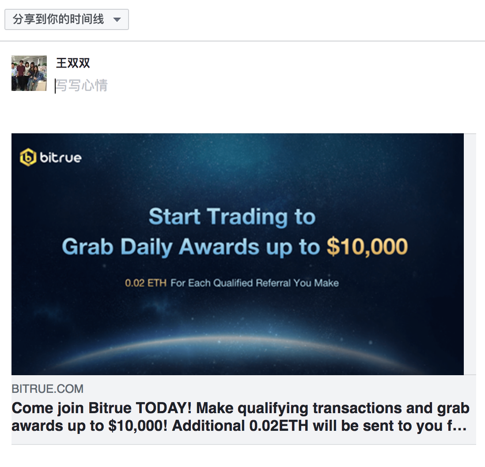

1、facebook规则根据open graph meta tags（og），facebook会自己从所分享的页面上去抓取这些og里面的内容，你可以定义如图片，描述等等 og定义后，分享就很美观了，具体标签含义可去官网查
地址
https://developers.facebook.com/docs/sharing/webmasters/
分享链接是：https://www.facebook.com/sharer/sharer.php?u=encodeURIComponent(url)
分享后的展示： 
2、twitter分享也有自己的一套规则，但是如果没有写的话，也是遵循og规则，我之前只加了og，没加twiiter分享规则，导致twiiter分享出现问题，不是自己预期的，所以还是加上，有备无患
分享链接： https://twitter.com/intent/tweet?url=encodeURIComponent(url)}&text=encodeURIComponent(text）
3、telegram分享
分享链接： https://telegram.me/share/url?url=encodeURIComponent(url)&text=encodeURIComponent(url)
4、LINE分享
分享链接：https://lineit.line.me/share/ui?url=encodeURIComponent(url)&text=encodeURIComponent(text)
5、Whatspp分享
分享链接：https://api.whatsapp.com/send?text=encodeURIComponent(text&url=encodeURIComponent(url）
6、messenger分享
分享链接：fb-messenger://share/?link=encodeURIComponent(url)
telegram、LINE、Whatspp、messenger按分享地址填写一般不会有什么问题。
注意点：
1、FB和TW 分享的meta 标签，必须是服务器生成的，如果有动态分享的内容， 用js改动的话，og tag并不会被识别出变动， 需要用到facebook 的javascript sdk https://developers.facebook.com/docs/javascript/quickstart
2、在测试的时候很容易碰见，分享的时候没有看见缩略图，内容没更新等问题，可能和缓存或者分享有问题，检测有
FB调试工具：
https://developers.facebook.com/tools/debug/sharing
TW调试工具：
https://cards-dev.twitter.com/validator
3、分享的url和text最好都编码encodeURIComponent
4、og:ur写的网址，是爬虫抓取放置属性标签的页面
5、whatsapp和messenger 分享是根据浏览器规则，如果没有装相应的app打开的是空白页面
遇到的问题：
遇到的问题都是上面说的注意点，避免踩坑